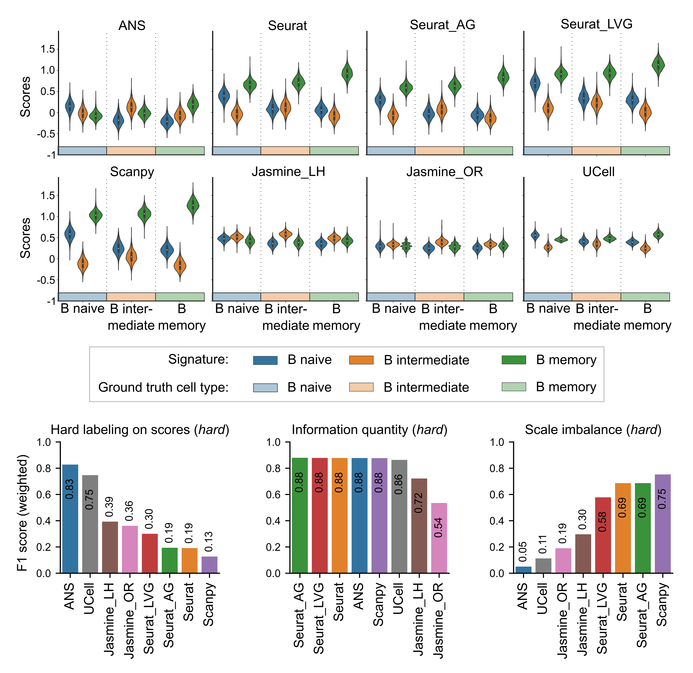

ANS: Adjusted Neighborhood Scoring#
In the field of single-cell RNA sequencing (scRNA-seq), gene signature scoring is integral for pinpointing and characterizing distinct cell populations. However, challenges arise in ensuring the robustness and comparability of scores across various gene signatures and across different batches and conditions. Addressing these challenges, we evaluated the stability of established methods such as Scanpy, UCell, and JASMINE in the context of scoring cells of different types and states. Additionally, we introduced a new scoring method, the Adjusted Neighbourhood Scoring (ANS), that builds on the traditional Scanpy method and improves the handling of the control gene sets. We further exemplified the usability of ANS scoring in differentiating between cancer-associated fibroblasts and malignant cells undergoing epithelial-mesenchymal transition (EMT) in four cancer types and evidenced excellent classification performance (AUCPR train: 0.95-0.99, AUCPR test: 0.91-0.99). In summary, our research introduces the ANS as a robust and deterministic scoring approach that enables the comparison of diverse gene signatures. The results of our study contribute to the development of more accurate and reliable methods for analyzing scRNA-seq data.
{kind=link}
Note
A preprint describing ANS and showing the results of signature scoring methods benchmark is now available.
Getting started#
Installation#
We aim for Python versions 3.8+. Run:
pip install git+https://github.com/lciernik/ANS_signature_scoring.git
Disclaimer: The implementations of all Tirosh et al. 2016 based scoring methods are largely based on the implementation of the score_genes() method in Scanpy.
Basic usage in Python#
The package allows full compatibility with the Python scRNA-seq analysis toolbox Scanpy. The scoring methods are applied on preprocessed (log-normalized) scRNA-seq.
import signaturescoring as ssc
ssc.score_signature(
adata=adata, # preprocessed (log-normalized) gene expression data in an AnnData object
gene_list=gene_signature, # gene expression signature, type list
method='adjusted_neighborhood_scoring',
ctrl_size=100,
score_name='scores', # scores stored in adata.obs column defined by score_name
)
print(adata.obs['scores'].describe())
Other method values:
seurat_scoring, seurat_ag_scoring, and seurat_lvg_scoring: Python implementation of the scoring method AddModuleScore of the package Seurat first proposed by Tirosh et al. 2016 and two alternatives (this paper).
jasmine_scoring: Python implementation of JASMINE by Noureen et al. 2022. Requires an additional argument score_method with the values likelihood or oddsratio.
ucell_scoring: Python implementation of UCell by Andreatta et Carmona 2021.
Basic usage in R#
The repository contains an R implementation of the novel scoring method in the folder src_R/adjusted_neighborhood_scoring.R. The file can be downloaded, and the method can be loaded for usage.
Disclaimer: The code is largely based on the implementation of the AddModuleScore method of the Seurat package.
Note: ANS for R should be used on Seurat objects. Source the file in your script and use it identically to AddModuleScore.
Example:
source('MT/ANS_signature_scoring/src_R/adjusted_neighborhood_scoring.R')
# Initialize the Seurat object with the log-normalized data.
# e.g. Peripheral Blood Mononuclear Cells (PBMC) freely available from 10X Genomics
pbmc <- "..."
# List of signatures
markers <- list(markers = gene_list)
# score data
pbmc <- AdjustedNeighborhoodScoring(pbmc, features = markers)